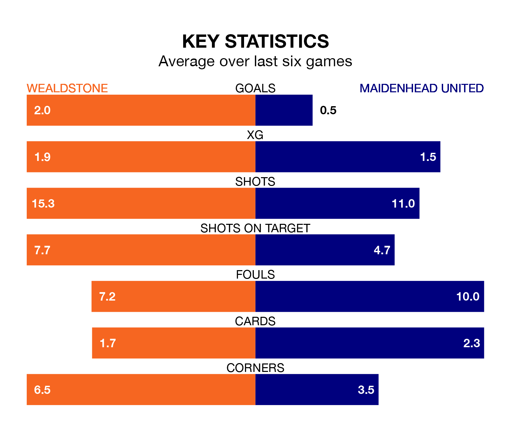

Wealdstone host Maidenhead United on Tuesday at Ruislip Manor Sports & Social Club in the National League.
In their last league match, on Saturday, Wealdstone drew with Barnet 1-1 away, with their goal scored by Corie Andrews.
Maidenhead also drew, 1-1 away at York City, with Ashley Nathaniel-George scoring their goals.
In the last 10 years, Wealdstone and Maidenhead have played each other on 15 occasions. Wealdstone won five of them, Maidenhead four, and they drew six times.
On average, Wealdstone scored 1.1 goals and Maidenhead 1.4 in those matches.
Their last meeting was on December 26, when Wealdstone won 2-0 away.
With 31 goals in 30 games so far this season, Maidenhead are the league's third-lowest scorers with 1.0 goals per game. But they are conceding fewer than average too, letting in 38 goals at a rate of 1.3 per game.
Wealdstone are also below average scorers, with 1.4 goals per game, compared to a league average of 1.5. They have also conceded 1.4 goals per game.
The home side are in mixed form in the National League, with two wins and three draws from their last six games.
With a win and three draws over that period, United's form is worse – they have taken six points from 18, compared to Wealdstone's nine.
The visitors are 17th in the table after 30 games, of which they have won eight and drawn 12, earning 36 points.
Wealdstone are four places ahead of Maidenhead in 13th, with 10 wins and eight draws putting them on 38 points.
Updated: 10:28 (UTC), 06/02/24